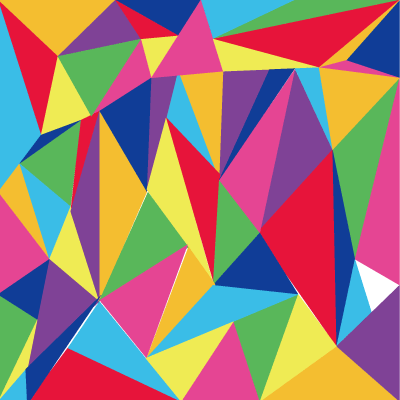
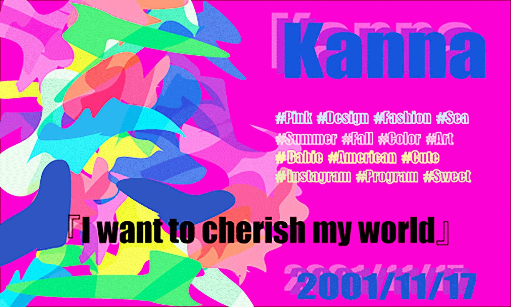

This site is my portfolio.They were created in Illustrator.
Portfolio
milkyway
This painting is a work made in a free study of summer .Point is the butterflies are flying on top of the Milky Way .

Pastel check
This painting is in order to lovely check , I used pastel .Then, the color was also devised .

Spring Check
This painting was thought a look at the spring camp of the site of the apple.Design it was difficult and complex .

Art box
This picture has written using the cube .Color is using my favorite color .

Longing of the city
This picture is I No. 1 favorite picture .But , it was also the most hard to make .I am happy if me think cute .

Kanna's check
This picture is a check that was using my favorite pink and navy blue .This check has to express myself .

polygon
This painting is by using a polygon style .Point is where you are made using a variety of colors .
Name card
This picture is the place of the business card .Birthday , name and my favorite is written .
